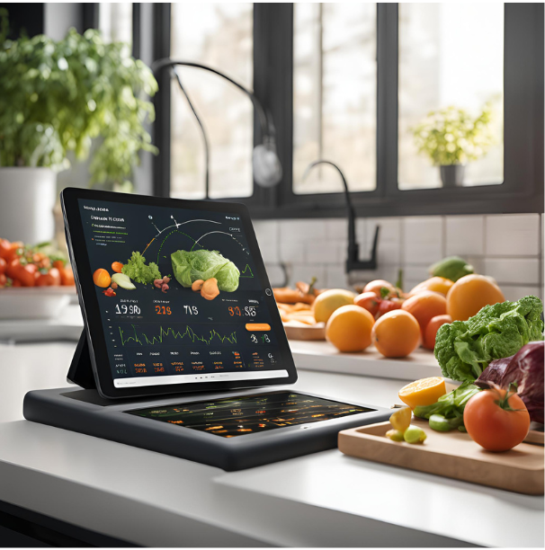
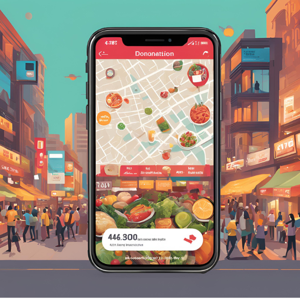
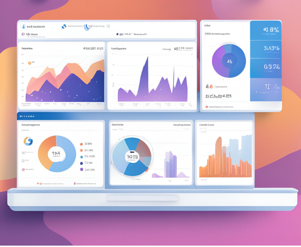

AI-Powered Food Waste Prediction
Our system predicts food needs based on historical data, helping restaurants reduce waste by ordering and preparing the right amount of food. AI-driven insights optimize inventory and reduce food surpluses.

Real-Time Food Donation and Sale Notifications
Surplus food can be donated or sold to food banks, NGOs, and others. The system sends real-time notifications to food acceptors when food is available, ensuring it doesn't go to waste.

Comprehensive Dashboard with Analytics and Insights
Restaurants have access to a powerful dashboard that provides detailed insights, including food waste patterns, donation history, sales data, and AI-powered recommendations to reduce food waste.